可视化流程编排
以流程图组织图像、视频、相机、OpenCV、ONNX、通信和检测记录节点，便于搭建与验证视觉处理链路。
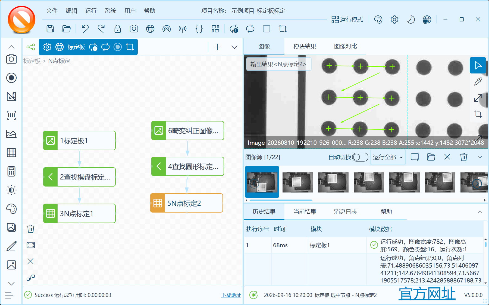
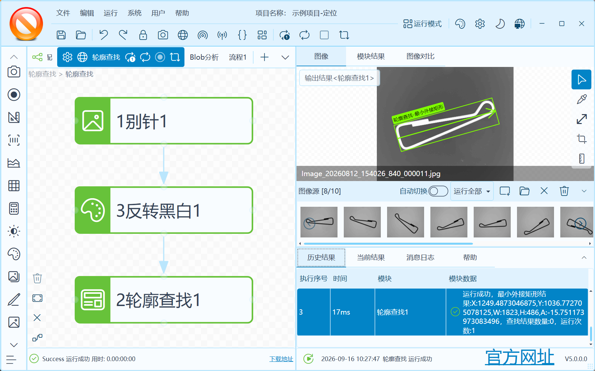
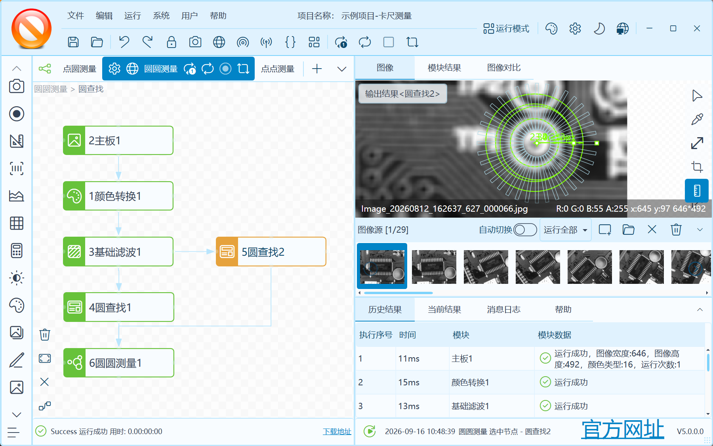
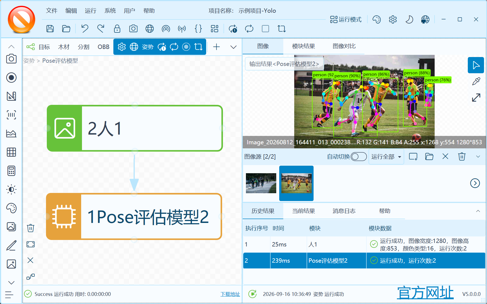
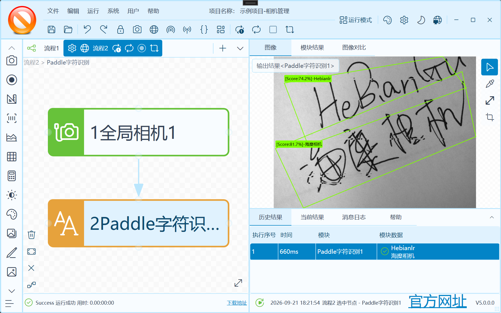
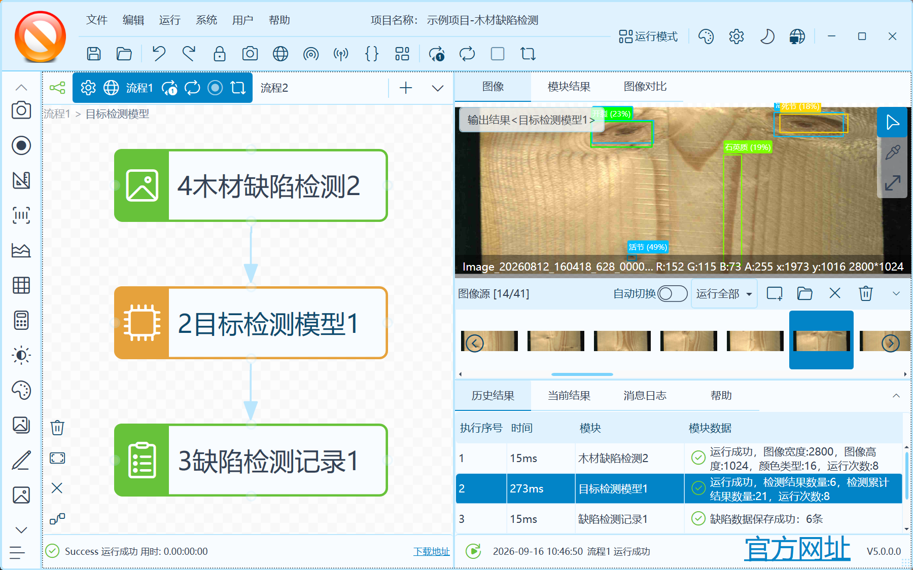
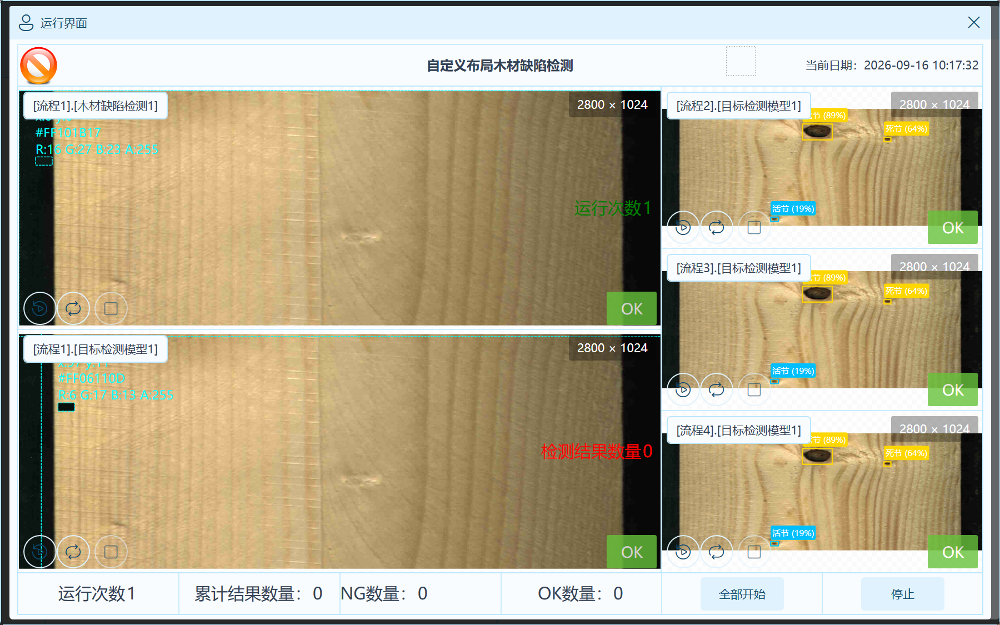
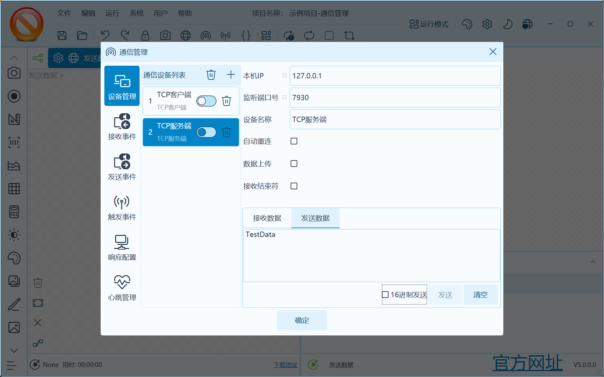
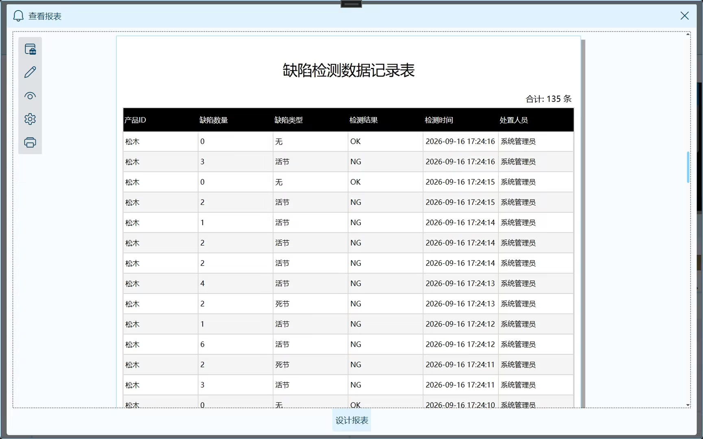
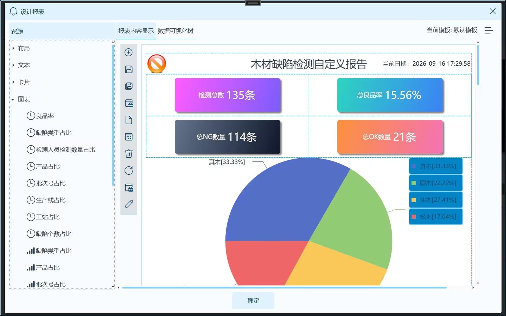
面向机器视觉流程搭建、验证与桌面端应用开发的可视化流程编排平台。
扫码获取源码使用手机扫描二维码，或点击卡片前往 B站小店。WPF-VisionMaster 是一个基于 .NET 8、WPF 与 OpenCvSharp4 构建的机器视觉流程编排解决方案。项目借鉴通用视觉软件类产品的交互方式，提供图像源、视频源、相机管理、通信管理、运行模式、全局变量、参数表达式等通用功能，并内置模板匹配、标定、定位、测量、缺陷检测、检测记录、ONNX 与 YOLO 推理等通用模块。同时，支持 OpenCV 与 Halcon 算子、插件模式等扩展方式，以及通用软件所需的项目管理、身份权限、主题与设置等功能模块。
以流程图组织图像、视频、相机、OpenCV、ONNX、通信和检测记录节点，便于搭建与验证视觉处理链路。
集成 OpenCV 图像处理、模板匹配、图像矫正和 ONNX 推理能力，可扩展目标检测、分类与语义分割场景。
支持本地图像、图像文件夹、本地视频、示例数据集和海康工业相机等数据源。
提供项目管理、身份认证、角色权限、检测记录、主题设置、日志和通用桌面端组件。
按 H.Controls、H.Extensions、H.Modules、H.Services 与 H.VisionMaster 分层，支持按需复用与二次开发。
使用 Entity Framework Core 8 支持 SQLite 与 SQL Server 相关模块，项目数据可使用 JSON 序列化保存。
建立 OpenCV 图像处理、实时视频、滤波、形态学和边缘检测能力，并提供工程管理、流程设计、模板与主题配置。
扩展 ROI、条件分支、ONNX 分类/检测/分割、Modbus 通信、结果输出和运行模式，并升级至 .NET 8。
增加卡尺与几何测量、海康 MVS 相机、参数表达式、全局变量、多布局预览和流程控制能力。
完善缺陷检测记录、运行模式、串口/TCP/UDP/HTTP 通信、身份认证、前景矫正和模板匹配；4.0.1 新增相机 IO 输出。
重构插件化视觉节点体系，扩展 OpenCV、Halcon、ONNX、YOLO、OCR、条码识别与光源模拟等能力，并增强运行页面设计、参数表达式联动和项目交付体验。
承载应用启动、流程画布、项目与运行界面，是机器视觉平台的主 WPF 应用。
包含相机、项目、检测记录、通信、OpenCV、ONNX 和 Zoo 示例等机器视觉业务模块。
提供流程图、表单、属性网格、图表、主题、消息和导航等 WPF 通用控件。
提供序列化、日志、设置、身份、项目、消息和其他跨模块基础服务。
组合图像采集、预处理、目标检测、模板匹配、测量与缺陷记录节点，搭建标准化检测流程。
通过海康相机、Modbus、串口、TCP、UDP 与 HTTP 节点连接相机、PLC、仪器和业务系统。
利用可视化流程、项目模板、运行模式、身份权限和检测报告，加速算法验证和现场部署。
WPF VisionMaster 由 HeBianGu 开发和维护。如需技术交流、项目合作或商业授权，请通过以下官方渠道联系。
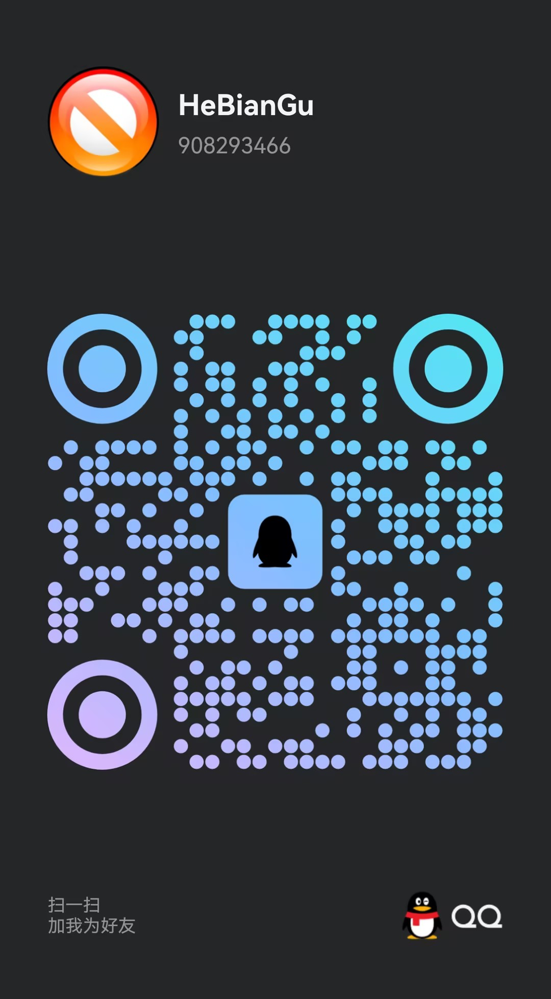
作者：HeBianGu QQ：908293466 交流群：971261058